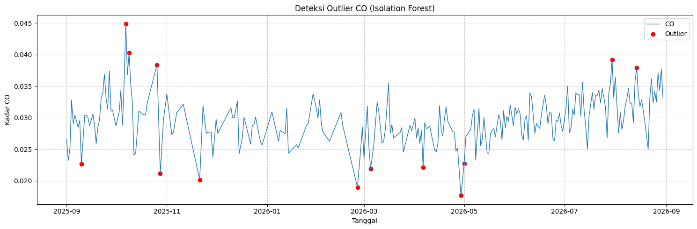
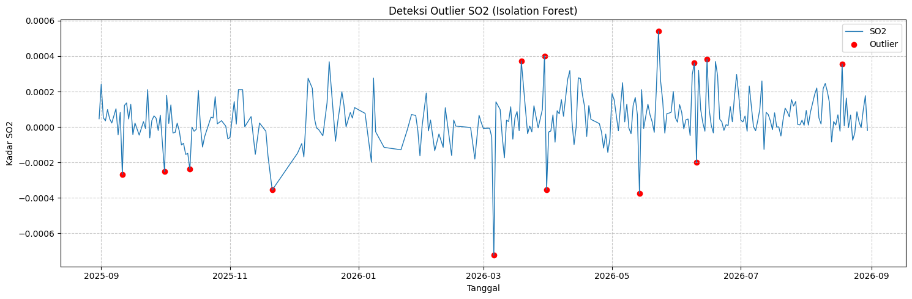
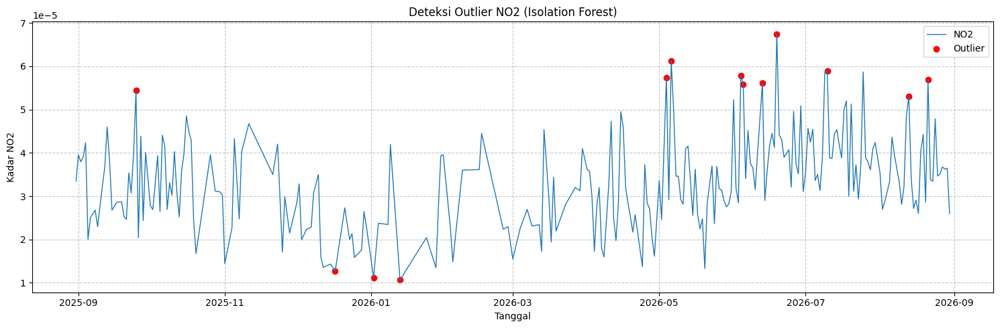
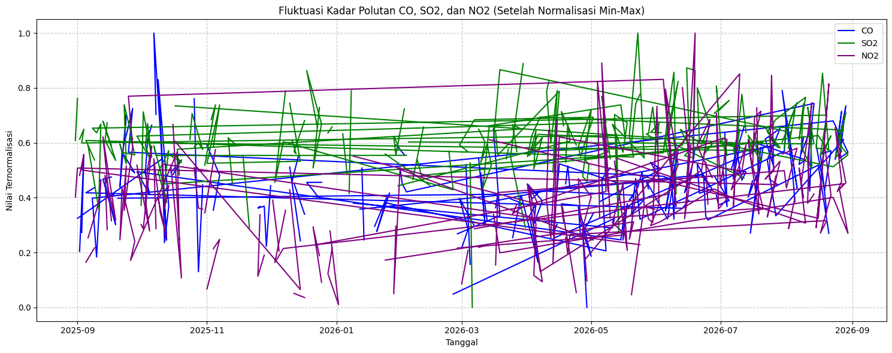

Data Understanding#
Data Collection#
Pada proyek ini, data polutan udara dikumpulkan dalam bentuk deret waktu harian untuk tiga variabel utama, yaitu CO, SO₂, dan NO₂. Data tersebut disimpan dalam format CSV dan dapat dibuka menggunakan library Pandas untuk dianalisis lebih lanjut.
Dataset yang digunakan dalam proyek ini adalah file yang berada di folder:
../../data/polutan/CO.csv
../../data/polutan/SO2.csv
../../data/polutan/NO2.csv
Hasil CSV#
Berikut adalah tampilan awal dari dataset tersebut.
CO
| date | feature_index | CO | |
|---|---|---|---|
| 0 | 2025-09-03T00:00:00.000Z | 0 | 0.025086 |
| 1 | 2025-09-04T00:00:00.000Z | 0 | 0.032756 |
| 2 | 2025-09-02T00:00:00.000Z | 0 | 0.023202 |
| 3 | 2025-08-30T00:00:00.000Z | 0 | NaN |
| 4 | 2025-08-31T00:00:00.000Z | 0 | NaN |
SO₂
| date | feature_index | SO2 | |
|---|---|---|---|
| 0 | 2025-09-20T00:00:00.000Z | 0 | NaN |
| 1 | 2025-09-16T00:00:00.000Z | 0 | -0.000043 |
| 2 | 2025-09-18T00:00:00.000Z | 0 | NaN |
| 3 | 2025-09-15T00:00:00.000Z | 0 | 0.000128 |
| 4 | 2025-09-14T00:00:00.000Z | 0 | 0.000045 |
NO₂
| date | feature_index | NO2 | |
|---|---|---|---|
| 0 | 2025-09-30T00:00:00.000Z | 0 | NaN |
| 1 | 2025-10-01T00:00:00.000Z | 0 | 0.000028 |
| 2 | 2025-10-02T00:00:00.000Z | 0 | 0.000027 |
| 3 | 2025-10-06T00:00:00.000Z | 0 | 0.000044 |
| 4 | 2025-10-04T00:00:00.000Z | 0 | 0.000039 |
Eksplorasi Data#
Missing Values#
Missing values adalah nilai yang hilang atau tidak terisi pada dataset. Dalam data deret waktu polutan, kondisi ini bisa terjadi karena data tidak tercatat pada hari tertentu atau sensor tidak berhasil membaca konsentrasi pada waktu tertentu. Pada tahap ini, kita mengecek dua hal:
tanggal yang hilang dari rentang waktu
jumlah nilai kosong pada kolom konsentrasi polutan
1. Tanggal yang Hilang#
CO
import pandas as pd
df = pd.read_csv("../../data/polutan/CO.csv")
df['date'] = pd.to_datetime(df['date'])
start_date = df['date'].min()
end_date = df['date'].max()
full_range = pd.date_range(start=start_date, end=end_date, freq='D')
missing_dates = full_range.difference(df['date'])
print(f"Jumlah hari missing: {len(missing_dates)}")
print(missing_dates)
Jumlah hari missing: 0
DatetimeIndex([], dtype='datetime64[ns, UTC]', freq='D')
SO₂
import pandas as pd
df = pd.read_csv("../../data/polutan/SO2.csv")
df['date'] = pd.to_datetime(df['date'])
start_date = df['date'].min()
end_date = df['date'].max()
full_range = pd.date_range(start=start_date, end=end_date, freq='D')
missing_dates = full_range.difference(df['date'])
print(f"Jumlah hari missing: {len(missing_dates)}")
print(missing_dates)
Jumlah hari missing: 0
DatetimeIndex([], dtype='datetime64[ns, UTC]', freq='D')
NO₂
import pandas as pd
df = pd.read_csv("../../data/polutan/NO2.csv")
df['date'] = pd.to_datetime(df['date'])
start_date = df['date'].min()
end_date = df['date'].max()
full_range = pd.date_range(start=start_date, end=end_date, freq='D')
missing_dates = full_range.difference(df['date'])
print(f"Jumlah hari missing: {len(missing_dates)}")
print(missing_dates)
Jumlah hari missing: 0
DatetimeIndex([], dtype='datetime64[ns, UTC]', freq='D')
2. Data yang Hilang#
Selain tanggal, kita juga mengecek jumlah nilai NaN pada kolom konsentrasi polutan.
CO
df = pd.read_csv("../../data/polutan/CO.csv")
print("Jumlah missing value CO:", df['CO'].isna().sum())
Jumlah missing value CO: 116
SO₂
df = pd.read_csv("../../data/polutan/SO2.csv")
print("Jumlah missing value SO2:", df['SO2'].isna().sum())
Jumlah missing value SO2: 83
NO₂
df = pd.read_csv("../../data/polutan/NO2.csv")
print("Jumlah missing value NO2:", df['NO2'].isna().sum())
Jumlah missing value NO2: 111
Outliers#
Outliers adalah data yang sangat jauh dari pola umum dataset. Pada data kualitas udara, outlier bisa terjadi karena sensor membaca nilai ekstrem atau adanya kejadian khusus seperti peningkatan aktivitas industri atau kondisi cuaca tertentu. Untuk mengetahui keberadaan outlier, kita menggunakan metode Isolation Forest dari pustaka scikit-learn.
Isolation Forest bekerja dengan membangun pohon keputusan acak untuk memisahkan data. Observasi yang lebih mudah dipisahkan dianggap lebih tidak biasa, sehingga dapat dideteksi sebagai outlier. Hasil prediksi -1 menandakan data tersebut merupakan outlier.
1. CO#
import pandas as pd
import matplotlib.pyplot as plt
from sklearn.ensemble import IsolationForest
df = pd.read_csv("../../data/polutan/CO.csv")
df = df.dropna(subset=['CO']).copy()
df['date'] = pd.to_datetime(df['date'])
df = df.sort_values('date').reset_index(drop=True)
model = IsolationForest(contamination=0.05, random_state=42)
pred = model.fit_predict(df[['CO']])
df['anomaly'] = pred
outliers = df[df['anomaly'] == -1]
print("Jumlah outlier CO:", len(outliers))
print(outliers[['date', 'CO']].head())
plt.figure(figsize=(15, 5))
plt.plot(df['date'], df['CO'], label='CO', linewidth=1)
plt.scatter(outliers['date'], outliers['CO'], color='red', label='Outlier')
plt.title('Deteksi Outlier CO (Isolation Forest)')
plt.xlabel('Tanggal')
plt.ylabel('Kadar CO')
plt.legend()
plt.grid(True, linestyle='--', alpha=0.7)
plt.tight_layout()
plt.show()
Jumlah outlier CO: 13
date CO
8 2025-09-10 00:00:00+00:00 0.022655
31 2025-10-07 00:00:00+00:00 0.044883
33 2025-10-09 00:00:00+00:00 0.040262
44 2025-10-26 00:00:00+00:00 0.038365
45 2025-10-28 00:00:00+00:00 0.021190

2. SO₂#
import pandas as pd
import matplotlib.pyplot as plt
from sklearn.ensemble import IsolationForest
df = pd.read_csv("../../data/polutan/SO2.csv")
df = df.dropna(subset=['SO2']).copy()
df['date'] = pd.to_datetime(df['date'])
df = df.sort_values('date').reset_index(drop=True)
model = IsolationForest(contamination=0.05, random_state=42)
pred = model.fit_predict(df[['SO2']])
df['anomaly'] = pred
outliers = df[df['anomaly'] == -1]
print("Jumlah outlier SO2:", len(outliers))
print(outliers[['date', 'SO2']].head())
plt.figure(figsize=(15, 5))
plt.plot(df['date'], df['SO2'], label='SO2', linewidth=1)
plt.scatter(outliers['date'], outliers['SO2'], color='red', label='Outlier')
plt.title('Deteksi Outlier SO2 (Isolation Forest)')
plt.xlabel('Tanggal')
plt.ylabel('Kadar SO2')
plt.legend()
plt.grid(True, linestyle='--', alpha=0.7)
plt.tight_layout()
plt.show()
Jumlah outlier SO2: 14
date SO2
10 2025-09-11 00:00:00+00:00 -0.000268
27 2025-10-01 00:00:00+00:00 -0.000253
39 2025-10-13 00:00:00+00:00 -0.000239
65 2025-11-21 00:00:00+00:00 -0.000356
117 2026-03-06 00:00:00+00:00 -0.000724

3. NO₂#
import pandas as pd
import matplotlib.pyplot as plt
from sklearn.ensemble import IsolationForest
df = pd.read_csv("../../data/polutan/NO2.csv")
df = df.dropna(subset=['NO2']).copy()
df['date'] = pd.to_datetime(df['date'])
df = df.sort_values('date').reset_index(drop=True)
model = IsolationForest(contamination=0.05, random_state=42)
pred = model.fit_predict(df[['NO2']])
df['anomaly'] = pred
outliers = df[df['anomaly'] == -1]
print("Jumlah outlier NO2:", len(outliers))
print(outliers[['date', 'NO2']].head())
plt.figure(figsize=(15, 5))
plt.plot(df['date'], df['NO2'], label='NO2', linewidth=1)
plt.scatter(outliers['date'], outliers['NO2'], color='red', label='Outlier')
plt.title('Deteksi Outlier NO2 (Isolation Forest)')
plt.xlabel('Tanggal')
plt.ylabel('Kadar NO2')
plt.legend()
plt.grid(True, linestyle='--', alpha=0.7)
plt.tight_layout()
plt.show()
Jumlah outlier NO2: 13
date NO2
21 2025-09-25 00:00:00+00:00 0.000054
71 2025-12-17 00:00:00+00:00 0.000013
80 2026-01-02 00:00:00+00:00 0.000011
84 2026-01-13 00:00:00+00:00 0.000011
141 2026-05-04 00:00:00+00:00 0.000057

Visualisasi Gabungan (CO, SO₂, NO₂)#
Setelah proses pengecekan missing value dan outlier dilakukan, kita dapat melihat pola fluktuasi ketiga polutan secara bersamaan. Karena skala nilai ketiganya berbeda, maka dilakukan normalisasi Min-Max agar semua grafik bisa dibandingkan dalam satu sumbu yang sama.
Rumus normalisasi Min-Max adalah:
Dengan rumus ini, semua nilai akan berada pada rentang 0 sampai 1.

Kesimpulan#
Dari eksplorasi data, kita mengetahui bahwa dataset polutan masih mungkin mengandung:
tanggal yang hilang
nilai kosong (
NaN)outlier yang perlu dibersihkan sebelum proses ekstraksi fitur
Tahap berikutnya adalah melakukan preprocessing untuk menangani missing value dan outlier, lalu menghasilkan data yang lebih bersih dan siap digunakan pada tahap ekstraksi fitur.